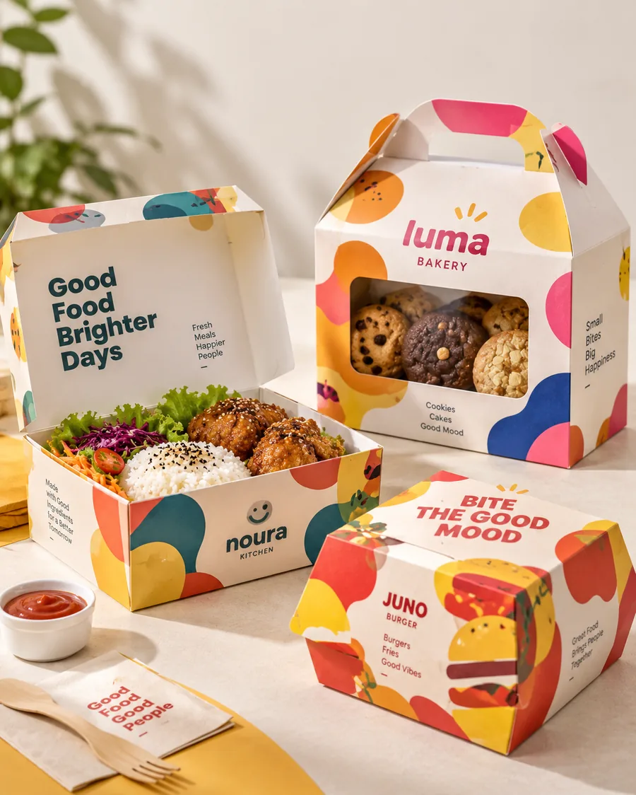

Paperbag
Untuk bakery, dessert, snack, hampers kecil, takeaway, dan retail makanan. Bisa dikonsultasikan untuk kebutuhan printing dan branding.
Temukan pilihan packaging berbahan kertas untuk kebutuhan bisnis F&B kamu. Mulai dari paperbag, corrugated box, sampai kebutuhan packaging custom.

Produk yang sudah terverifikasi dari audit publik Kartona: paperbag, corrugated box, softbox, dan custom packaging box. Detail ukuran, MOQ, dan opsi printing perlu dikonfirmasi saat chat.
Untuk bakery, dessert, snack, hampers kecil, takeaway, dan retail makanan. Bisa dikonsultasikan untuk kebutuhan printing dan branding.
Untuk produk yang butuh box lebih kokoh: catering, hampers makanan, cake/dessert tertentu, dan pengiriman jarak dekat.
Jika ukuran atau bentuk standar tidak cocok, kirim detail produk. Kartona bantu cek opsi yang bisa dibuat.
Kasih tahu jenis produk dan kebutuhan kamu. Tim Kartona bantu rekomendasikan pilihan packaging yang sesuai.
Konsultasi via WhatsAppFoto produk F&B Kartona. Detail ukuran, MOQ, dan opsi printing dikonfirmasi saat chat.
Contoh produk Kartona untuk bisnis makanan. Detail ukuran dan MOQ dikonfirmasi saat chat.
Ceritakan jenis makanan dan packaging yang dicari.
Kartona bantu cek opsi yang sesuai.
Spesifikasi dan quotation dikonfirmasi.
Produksi/order berjalan setelah detail jelas.
Kirim kebutuhan kamu sekarang. Tidak perlu isi form dulu.
Konsultasi via WhatsApp